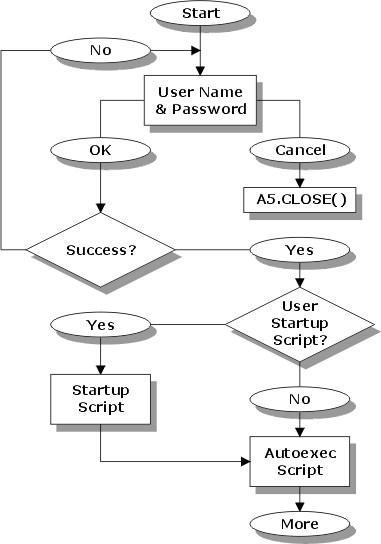

Startup Event Sequence
The following illustration shows the sequence of events when you have implemented user level security, user scripts, and an autoexec script. You must implement the A5.CLOSE() yourself if you want to gracefully force the user out of Alpha Five. The diagram also does not show a limit to attempted logons. You may want to count logon attempts, and force the user off if logon attempts exceed a threshhold value.

See Also
Starting Alpha Five With Command Line Options, Setting Up Database Security, Defining User Settings, User and Group Management Functions, Encryption Functions